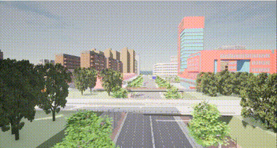

智能信号控制
该脚本用于在CARLA仿真环境中智能控制红绿灯信号。可以根据传入的参数设置特定红绿灯的颜色和持续时间。红绿灯的颜色设置包括绿灯、黄灯和红灯，分别对应颜色ID [1, 2, 3]。颜色持续时间以秒为单位。
参数说明
脚本接收以下参数：
--host(-H): CARLA服务器的IP地址，默认为127.0.0.1。--port(-p): CARLA服务器的TCP端口，默认为2000。--traffic_id(-I): 目标红绿灯的OpenDrive ID，默认为-5。--color_id(-C): 红绿灯颜色ID，对应绿灯、黄灯和红灯，分别为1、2和3，默认为1。--color_time(-T): 红绿灯颜色的持续时间，单位为秒，默认为20。
参数格式
红绿灯颜色设置参数的格式为【红绿灯OpenDrive ID，颜色ID，设置时长】。
红绿灯颜色ID说明：
- 绿灯：
1 - 黄灯：
2 - 红灯：
3
示例
python signal_control.py --traffic_id -5 --color_id 1 --color_time 30
以上命令设置OpenDrive ID为-5的红绿灯为绿灯，持续时间为30秒。
脚本工作流程
- 连接到CARLA服务器并获取世界对象。
- 设置世界为同步模式，以确保红绿灯设置的应用。
- 获取所有红绿灯的对象。
- 根据传入的参数，设置指定红绿灯的颜色和持续时间。
- 通过
world.tick()应用红绿灯的设置。 - 恢复世界设置为异步模式。
注意事项
- 在执行脚本前，请确保CARLA服务器已启动。
- 脚本中的默认参数适用于一般情况，可根据需要进行调整。
- 若需要添加更多的红绿灯配置，可在
lights_setting列表中添加相应的项。
运行结果
